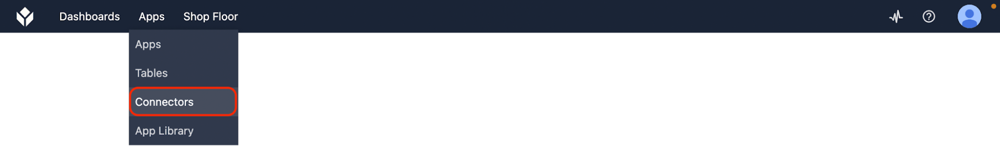
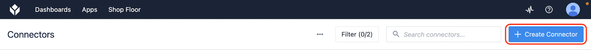
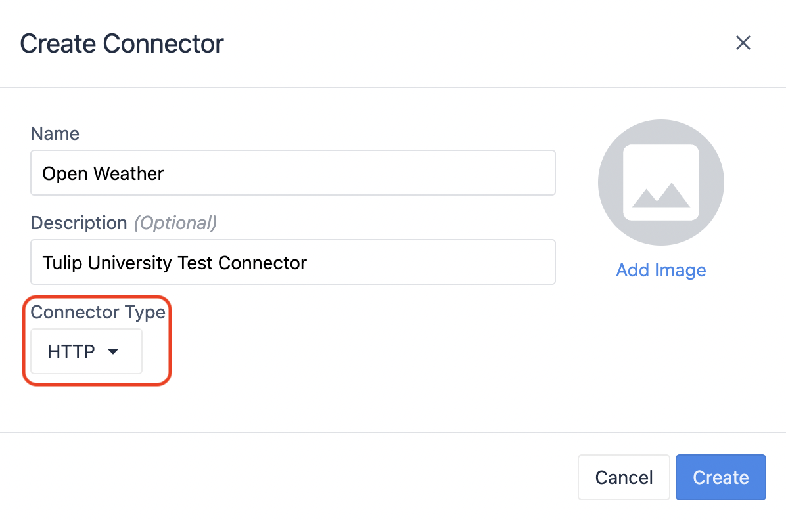
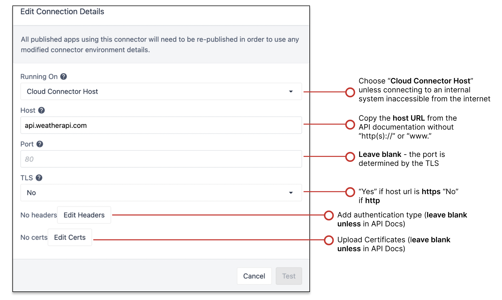
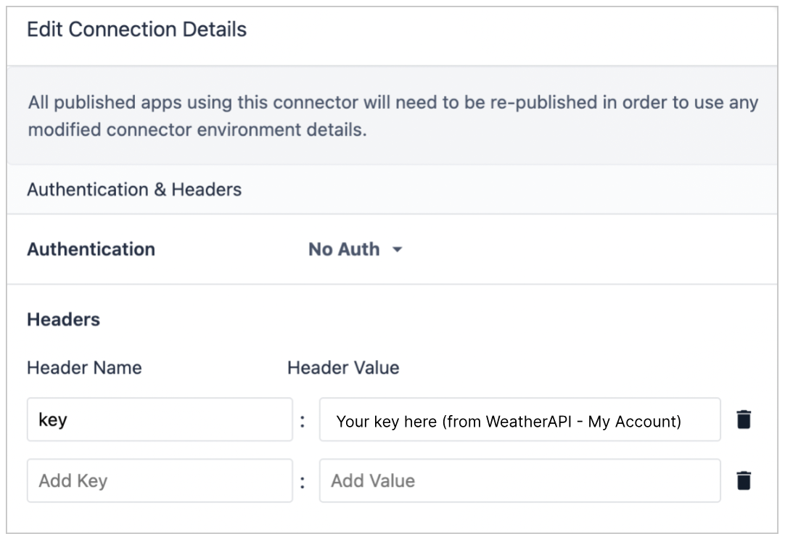

How to Set Up a Connector (HTTP API)
Objective 1
Follow along with the video to get an in-depth overview of using API docs to set up a WeatherAPI connector. Or follow the written instructions below.
1. Create new WeatherAPI Connector
Instructions
- Navigate to the Connectors page in your Instance.
2. Create a new Connector.
3. Name your Connector and select "HTTP" from the dropdown.
4. Click "OFFLINE" to set up your connection.
5. Click "Edit Headers" and add a header parameter key=[Your API Key]. Click "back" to save.
6. Test to ensure the server is online. Save your connector.





Objective 2
1. In your WeatherAPI Connector, create a new GET function to get current weather. Title this function "GET Current Weather".
2. Use WeatherAPI docs to find:
- Base URL: http://api.weatherapi.com/v1
- Endpoint: /current.json
Instructions
To create a new connector function, you'll need to decide what kind of request you want to make. Read the API Docs to figure out what kinds of requests are possible and how to write them. For example, you'll need to:
- Choose Query Language (JSON? XML?)
- Choose a Request Method (For example, if you want to pull data into a Tulip app, you'll likely use a GET request. If you want to send data from a Tulip app to the external system, you'll likely use a POST request.)
- If you're making a read-request, add query parameters and/or edit the endpoint.
- If you're making a write-request, modify the request body.
Common API Requests
Most common:
Method
Read or Write
What does it do?
GET
Read
Retrieves data from server
POST
Write
Sends data to server and creates new resource
PUT
Write
Complete update; updates an existing resource
DELETE
Write
Deletes a resource
Uncommon:
HEAD
Read
Similar to "GET" method; often used for testing
PATCH
Write
Partial update; modifies a specific part of an existing resource